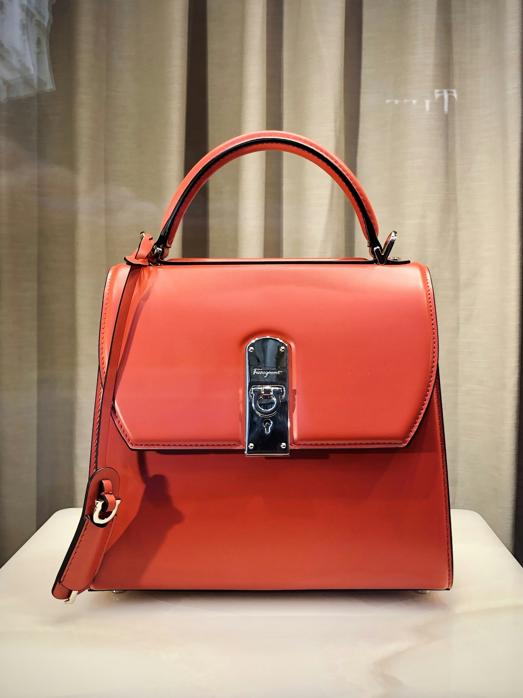
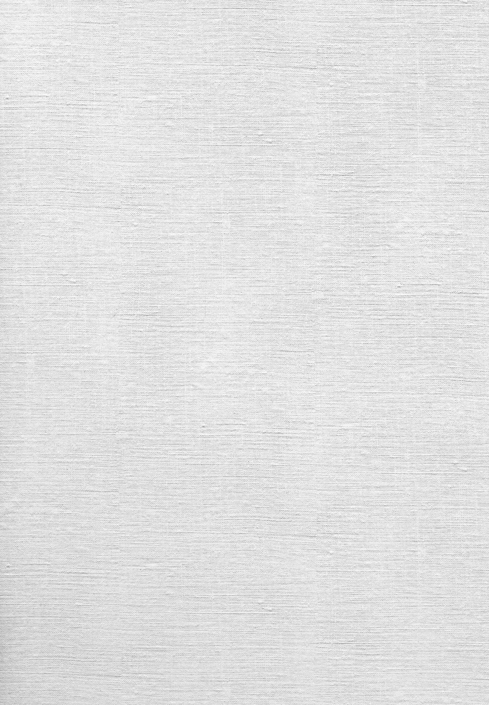

Automated Assembly Lines
28 lean synchronized conveyor sewing lines equipped with Juki automated lockstitch and profile buttonholing.

Garmen operates an enterprise-grade circular and flat knitting facility engineered to transform raw combed, compact, and synthetic yarns into ultra-stable, defect-free knitted textiles. Equipped with Germany's flagship Mayer & Cie and Terrot knitting machinery, our units produce over 45 metric tons of premium fabric daily.
Every single cone of yarn passes through electronic tension sensors and positive lycra feeding systems to guarantee zero spirality, consistent course/wale densities, and exact GSM control across thousands of meters.
From featherweight 120 GSM single jersey to heavy 420 GSM 3-thread organic fleece, our equipment portfolio delivers custom loop geometry.
18G to 34G gauges. Positive Lycra rollers ensure 98% elastic recovery with zero elastane breakage during scouring and reactive dyeing.
Smooth double-sided construction for premium athleisure, golf polos, and luxury loungewear with superior dimensional stability and zero edge-curl.
1x1, 2x2, and drop-needle engineered ribbing. Fully automated Shima Seiki computerized flat knit collars and cuffs matching body shade.
Heavyweight hoodie fabrics from 300 to 450 GSM. Available with unbrushed French loop interior or plush brushed fleece finish.
Breathable textured geometric structures engineered for corporate uniform polos, active shirts, and thermal base layers.
Multi-color electronic pattern selection producing custom brand logos, camouflage motifs, and engineered horizontal feeder stripes.
Full fleet breakdown of high-precision German and Japanese machinery operating across our 3 shifts.
| Machine Model | Origin | Diameter & Feeder | Gauge Range | Primary Fabric Formats | Daily Fleet Output |
|---|---|---|---|---|---|
| Mayer & Cie Relanit 3.2 II | Germany | 30" / 34" — 96 Feeders | 24G, 28G, 32G | Single Jersey, Lycra Jersey, Pique | 18,000 kg |
| Terrot I3P 154 Interlock | Germany | 32" — 84 Feeders | 24G, 28G | Interlock, Punto Di Roma, Rib 1x1 | 12,000 kg |
| Mayer & Cie MBF 3.2 | Germany | 30" — 90 Feeders | 18G, 20G | 3-Thread Heavy Fleece & French Terry | 9,500 kg |
| Shima Seiki SVR Computerized | Japan | Flat Bed 48" | 12G, 14G | Jacquard Polo Collars & Sleeve Cuffs | 32,000 pcs |
| Santoni SM8-TOP4J Seamless | Italy | 14" to 17" Body Size | 28G | Seamless Activewear & Sports Bras | 5,500 pcs |
Order our 2026 Knitwear Master Swatch Binder including over 60 physical fabric hangers with verified GSM, shrinkage metrics, and yarn certificates.
Our knitting output flows seamlessly into precision cutting, computerized assembly lines, and specialty embellishments.
28 lean synchronized conveyor sewing lines equipped with Juki automated lockstitch and profile buttonholing.
20-head Tajima embroidery, GOTS rotary printing, silicone heat transfers, and anti-microbial bio-polishing.

Explore our full library of 100% GOTS organic cottons, merino wool blends, European linen, and modal.